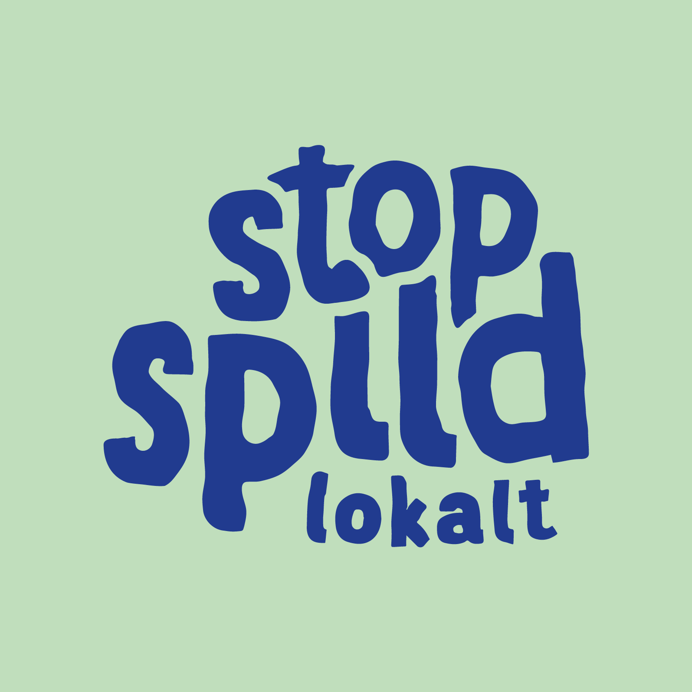

"Vi er Danmarks største sociale madspildsorganisation, der er drevet på frivillige kræfter. Det er vi, fordi vi hver dag redder mere end 30 tons overskudsmad"

Om Os
Stop Spild Lokalt reducerer madspild og hjælper økonomisk pressede borgere med at få mad på bordet ved hjælp af gratis overskudsmad.
Stop Spild Lokalt afhenter hver dag mad og råvarer, som ingenting fejler, men som pga. udløbet datomærkning eller beskadiget emballage ikke kan sælges i butikkerne.
Stop Spild Lokalt uddeler dagligt ca. 30-35 tons overskudsmad,
og er Danmarks største frivillige organisation, der systematisk, fødevaresikkert og sporbart deler overskudsmad ud, som ellers ville have mættet Danmarks containere og skraldespande.
Hver dag henter, bringer og uddeler vi mad via vores Madoaser, hvor maden deles ud til dem, der møder op – gratis selvfølgelig. På denne måde bliver maden brugt, spist og
sat til rådighed til dem som har brug for den.
Hvis du ønsker at læse mere om vores arbejde, vil kontakte os, eller finde din nærmeste madoase, tryk gerne nedenstående.